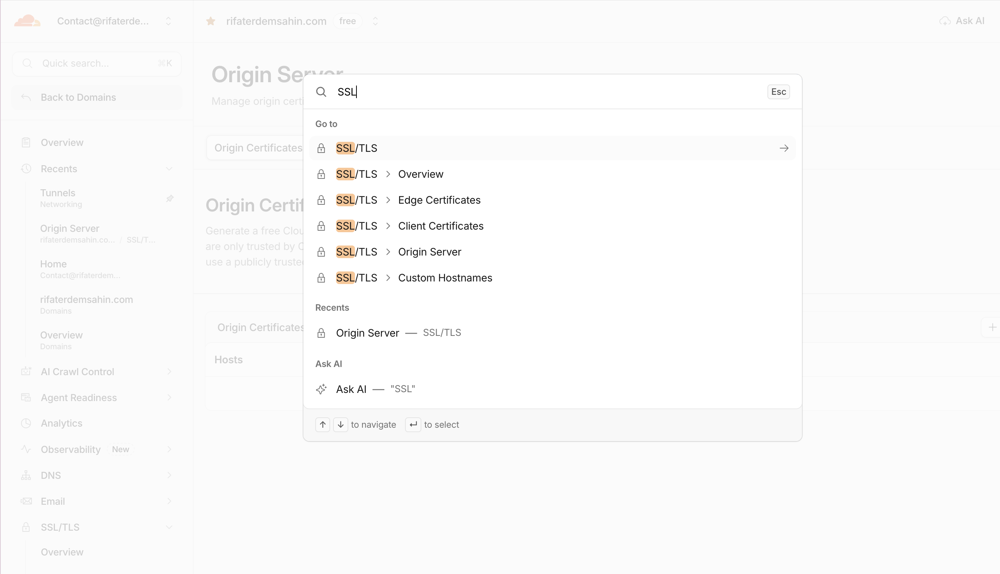
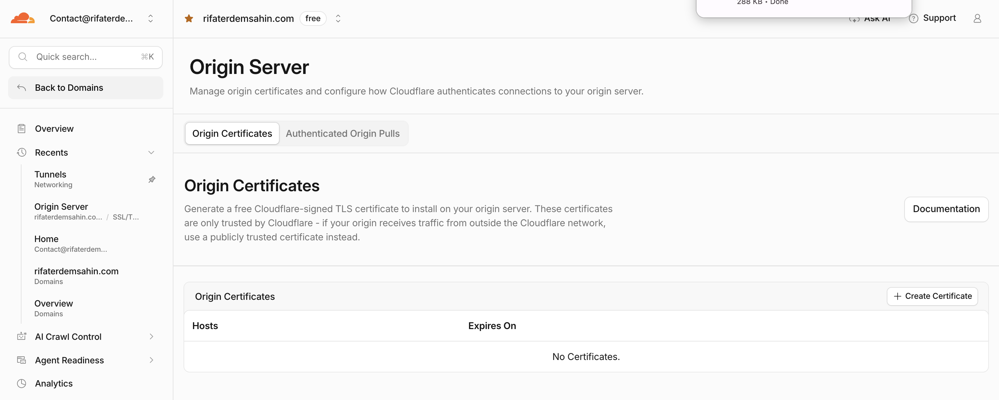
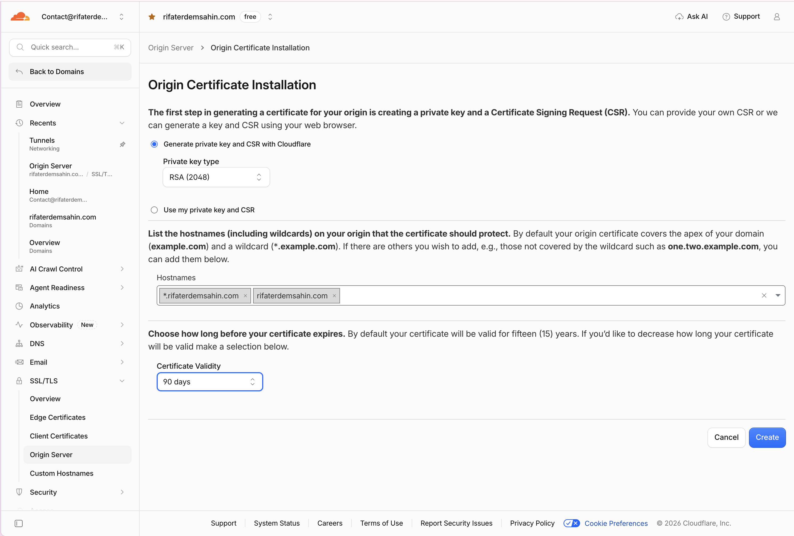
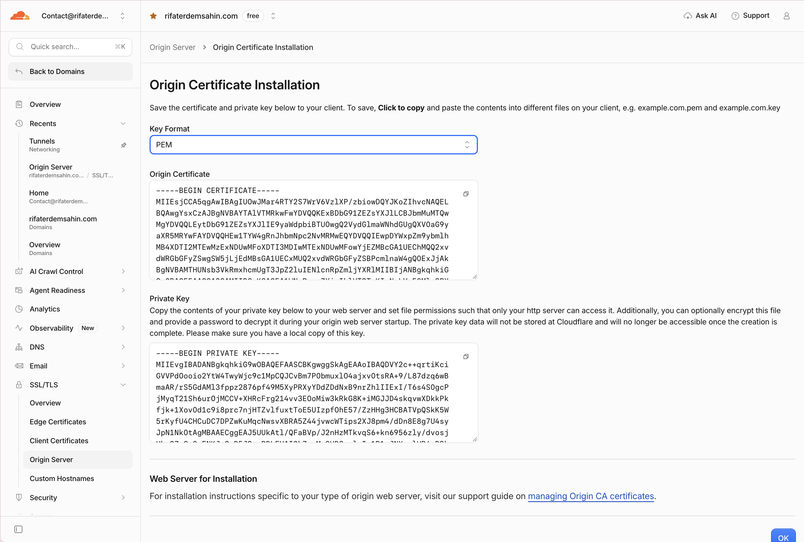
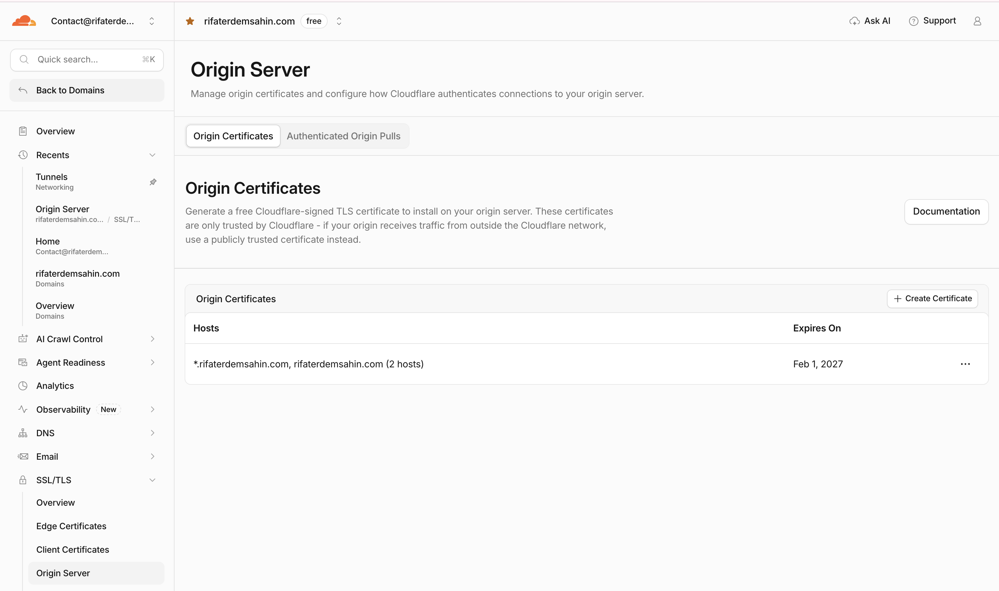
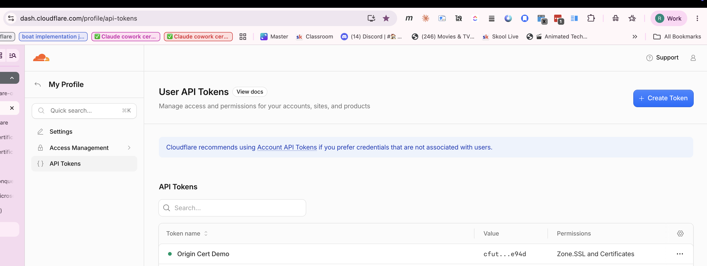
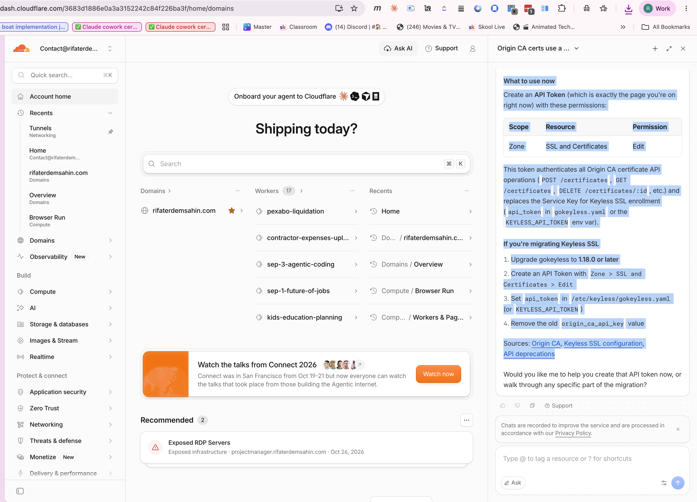

🧭 1. Where this fits — the big picture
Cloudflare terminates TLS for visitors at its edge using its own public certificate. The remaining gap is the hop between Cloudflare's edge and your origin server — that's exactly what an Origin CA certificate secures, letting you safely run Full (strict) SSL mode.
Browser"] -->|"HTTPS, public CA cert"| CF["☁️ Cloudflare Edge
(300+ cities)"] CF -->|"HTTPS, Origin CA cert 🔐"| O["🖥️ Your Origin Server
nginx / apache / app"] style U fill:#1e293b,stroke:#f59e0b,color:#fff style CF fill:#2a1a0f,stroke:#f97316,stroke-width:3px,color:#fff style O fill:#0f1f3d,stroke:#2563eb,color:#fff click U "https://developers.cloudflare.com/ssl/" "Cloudflare SSL overview" _blank click CF "https://www.cloudflare.com/network/" "Cloudflare's global edge network" _blank click O "https://github.com/rifaterdemsahin/cloudflare-origin-cert-demo/blob/main/nginx/origin.conf.example" "nginx origin config example" _blank
🗺️ 2. End-to-end request flow
| Step | Script | What happens |
|---|---|---|
| 1 | scripts/01-generate-csr.sh | Creates origin.key (RSA 2048) + origin.csr locally. Private key never leaves your machine. |
| 2 | scripts/02-request-origin-cert.sh | Calls Cloudflare's Origin CA endpoint with the CSR. |
| 3 | — | Cloudflare returns a signed certificate, valid up to 15 years. |
| 4 | nginx/origin.conf.example | Example server block using the cert + key. |
| 5 | Dashboard / API | Switch the zone's SSL/TLS mode to Full (strict). |
| 6 | scripts/03-verify.sh | Confirms the origin presents a trusted, Cloudflare-issued chain. |
🔑 3. Credentials & Key Generation Process updated
Zone > SSL and Certificates > Edit instead.
📋 The Full Picture
What the Origin CA Key was
The Origin CA API Key (also called the "Service Key") was a special authentication credential used to:
- Create, list, get, and revoke Origin CA certificates via the API
- Enroll Keyless SSL key servers and obtain their authentication certificates
- It was passed via the
X-Auth-User-Service-Keyheader.
Why it's gone
Per the official deprecation notice, Origin CA Service Keys were removed on September 30, 2026. After that date, key server enrollment and certificate refresh using only a Service Key fails. As of November 3, 2026, the key no longer works.
What to use now
Create an API Token (which is exactly the API Tokens dashboard page) with these permissions:
| Scope | Resource | Permission |
|---|---|---|
| Zone | SSL and Certificates | Edit |
This token authenticates all Origin CA certificate API operations (POST /certificates, GET /certificates, DELETE /certificates/:id, etc.) via Authorization: Bearer <TOKEN> and replaces the Service Key for Keyless SSL enrollment (api_token in gokeyless.yaml or the KEYLESS_API_TOKEN env var).
If you're migrating Keyless SSL
- Upgrade
gokeylessto 1.18.0 or later - Create an API Token with Zone > SSL and Certificates > Edit
- Set
api_tokenin/etc/keyless/gokeyless.yaml(orKEYLESS_API_TOKEN) - Remove the old
origin_ca_api_keyvalue
Sources: Origin CA, Keyless SSL configuration, API deprecations
contact@rifaterdemsahin.comexport CF_API_TOKEN="xxxxxxxx..." # API Token with Zone > SSL and Certificates > Edit
export CF_ZONE_DOMAIN="example.com" # your zone/domain on this account
export CF_HOSTNAMES="example.com,*.example.com".gitignore already excludes *.key, *.csr, *.pem, and .env.🖱️ 4. Method A — Dashboard (click-through)
contact@rifaterdemsahin.com — or go straight to your API Tokens page 🚀example.com, *.example.com, validity 15 yearsorigin.pem / origin.key, install on your server📸 Step-by-Step Screenshot Gallery (Click any to expand)

1. Origin Menu
2. Create Button
3. Domains
4. PEM & Key
5. Expiry Check
API Token
AI Guidance⚙️ 5. Method B — API / CLI (scripted, reproducible)
# 1. Generate a private key + CSR (stays local)
./scripts/01-generate-csr.sh
# 2. Send the CSR to Cloudflare, get back a signed cert
./scripts/02-request-origin-cert.sh
# 3. Install on nginx, then verify
./scripts/03-verify.shWhat 02-request-origin-cert.sh actually calls:
curl -s https://api.cloudflare.com/client/v4/certificates \
-H "Authorization: Bearer $CF_API_TOKEN" \
-H "Content-Type: application/json" \
-d '{
"hostnames": ["example.com", "*.example.com"],
"requested_validity": 5475,
"request_type": "origin-rsa",
"csr": "-----BEGIN CERTIFICATE REQUEST-----\n..."
}'Cloudflare responds with the signed certificate under result.certificate.
🧩 6. Installing on the origin (nginx)
ssl_certificate /etc/ssl/cloudflare/origin.pem;
ssl_certificate_key /etc/ssl/cloudflare/origin.key;
# Optional but recommended: only accept connections carrying
# Cloudflare's client certificate (Authenticated Origin Pulls)
# ssl_client_certificate /etc/ssl/cloudflare/authenticated_origin_pull_ca.pem;
# ssl_verify_client optional;Reload: sudo nginx -t && sudo systemctl reload nginx
✅ 7. Verifying it worked
./scripts/03-verify.sh
# or manually:
curl -v --resolve example.com:443:<ORIGIN_IP> https://example.com/ 2>&1 \
| grep -E "subject:|issuer:|SSL certificate verify"Expect the issuer to show CloudFlare Origin SSL Certificate Authority.
🛫 8. Worked example — installing the cert on a Fly.io origin
🖥️ A runnable stand-in for "install the cert on your real origin server": a small nginx Fly.io Machine that terminates TLS itself with the Origin CA cert — just like a VM/VPS — while Fly only forwards raw TCP on 443 (no Fly-managed TLS involved). 🙌
| File | Purpose |
|---|---|
origin-flyio/Dockerfile | nginx image that decodes the cert/key at boot |
origin-flyio/entrypoint.sh | 🔓 Writes the Fly secrets to /etc/ssl/cloudflare/ |
origin-flyio/nginx.conf | Origin server block — TLS terminated with the Origin CA cert |
origin-flyio/fly.origin.toml | 🛫 Raw TCP passthrough on 443 (not Fly's auto-TLS) |
scripts/04-install-cert-flyio-origin.sh | Prints the exact commands — creates / bills nothing on its own |
./scripts/04-install-cert-flyio-origin.sh
# then copy/run the printed flyctl + Cloudflare DNS commands🛡️ Security notes
- The private key never leaves your machine or gets sent to Cloudflare — only the CSR (public part) is.
CF_API_TOKENis scoped with least privilege to Zone > SSL and Certificates > Edit for only the required zone. The legacy account-wideOrigin CA Key(Service Key) was removed on September 30, 2026.- Origin certs are trusted only by Cloudflare, not by public browsers. Don't expose the origin directly without Authenticated Origin Pulls + a firewall allowing only Cloudflare IPs.